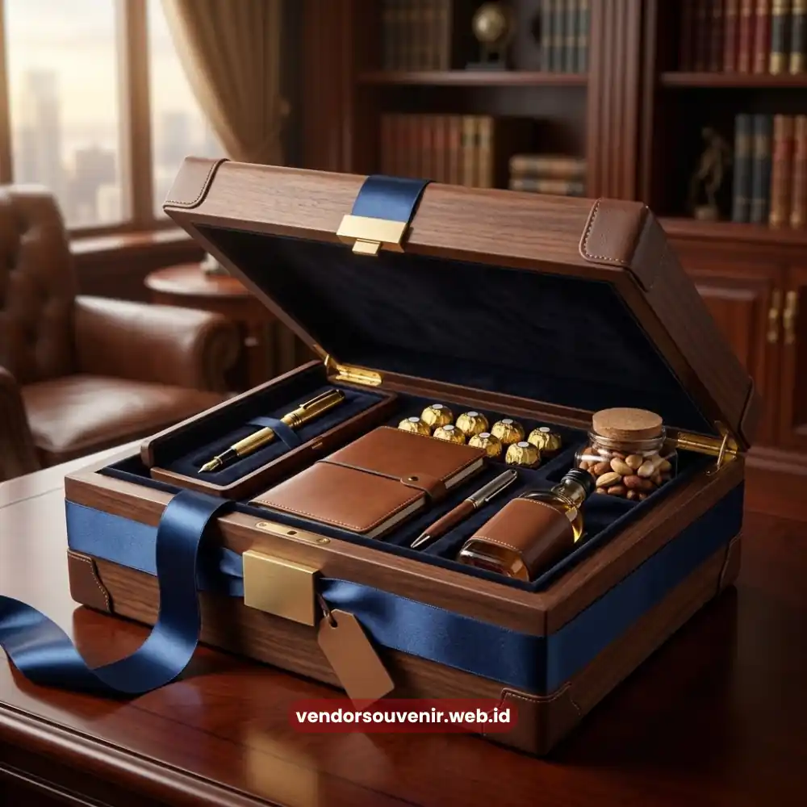

Daftar Isi
Seminar kit Malang tersedia dari vendor produsen lokal yang melayani Malang dan sekitarnya.
Pilihan paket bervariasi mulai dari ekonomis hingga premium dengan custom logo perusahaan.
Vendor ini menyediakan tas, notebook, pulpen, dan tumbler yang bisa dipesan sesuai skala acara seminar, workshop, atau training di Malang Kota, Batu, Kepanjen, Lawang, dan Singosari.
Apa Itu Seminar Kit dan Kenapa Dibutuhkan untuk Acara di Malang
Seminar kit adalah kumpulan perlengkapan yang dibagikan kepada peserta seminar, workshop, atau training.
Perlengkapan ini berfungsi sebagai kelengkapan acara sekaligus media branding penyelenggara.
Di Malang, kebutuhan ini datang dari kampus, komunitas, hingga perusahaan yang rutin menggelar acara internal maupun eksternal.
Isi Standar Seminar Kit untuk Seminar, Workshop, dan Training
Isi standar seminar kit umumnya terdiri dari tas atau goodie bag, notebook, pulpen, ID card holder, dan botol minum.
Kombinasi ini dipilih karena mendukung fungsi peserta selama acara berlangsung, mulai dari mencatat materi hingga membawa dokumen pulang.
Perbedaan Seminar Kit Standar dan Seminar Kit Custom Logo
Seminar kit standar biasanya dipakai untuk acara kampus atau komunitas dengan kebutuhan dasar dan tanpa branding khusus.
Seminar kit custom logo lebih banyak dipilih perusahaan karena setiap item dicetak dengan logo korporat sebagai bagian dari strategi branding acara.
Apakah Seminar Kit Bisa Dicustom Logo Perusahaan?
Bisa.
Seminar kit dapat dicustom logo pada tas, notebook, pulpen, dan tumbler dengan beberapa pilihan teknik cetak seperti sablon, bordir, dan UV print, tergantung material item yang dipilih.
Paket Seminar Kit yang Tersedia dari Vendor Malang
Vendor seminar kit di Malang menawarkan tiga tingkat paket yang dibedakan dari kelengkapan isi dan kualitas material.
Hal ini memudahkan panitia acara untuk bisa memilih sesuai kebutuhan acaranya.
Paket Ekonomis
Paket ekonomis berisi tas, notebook, dan pulpen dengan material standar.
Paket ini cocok untuk acara kampus atau komunitas dengan jumlah peserta besar, di mana fokus utamanya adalah kelengkapan dasar peserta tanpa kebutuhan branding yang rumit.
Paket Standar Korporat
Paket standar korporat menambahkan tumbler atau flashdisk pada komponen dasar (tas, notebook, pulpen).
Paket ini digunakan untuk training internal atau workshop perusahaan berskala menengah yang tetap ingin membawa unsur branding ringan tanpa harus mencetak logo di seluruh item.
Paket Premium Custom Logo
Paket premium menggunakan material yang lebih baik dengan cetak logo di seluruh item tas, notebook, pulpen, dan tumbler.
Paket ini dipilih perusahaan yang menjadikan seminar kit sebagai bagian dari citra brand pada acara skala besar, seperti seminar korporat, konferensi, atau acara peluncuran produk.
Bagaimana Menentukan Paket yang Sesuai untuk Acara Anda?
Pemilihan paket sebaiknya disesuaikan dengan skala acara, jumlah peserta, dan tujuan branding penyelenggara.
Acara kampus atau komunitas dengan peserta banyak umumnya lebih cocok dengan paket ekonomis, sementara acara korporat yang mengutamakan citra brand lebih sesuai dengan paket standar atau premium.
Detail kelengkapan, jumlah minimum pemesanan, dan pilihan teknik cetak dapat dikonsultasikan langsung dengan tim vendor sesuai kebutuhan acara.

Pilihan Kemasan Mewah untuk Acara Korporat
Cakupan Wilayah Layanan, Malang Kota dan Sekitarnya
Vendor seminar kit ini melayani pengiriman ke Malang Kota dan wilayah penyangga di sekitarnya.
Hal ini memastikan acara di luar pusat kota tetap bisa memesan tanpa kendala logistik berarti.
Area Pengiriman: Kota Batu, Kepanjen, Lawang, Singosari, dan Dau
Wilayah layanan mencakup Kota Batu, Kepanjen, Lawang, Singosari, dan Dau, dengan basis produksi berada di Malang Kota.
Estimasi Waktu Kirim dari Basis Produksi di Malang
Waktu kirim mengikuti jarak tempuh dari basis produksi di Malang Kota.
Acara yang berlokasi di Malang Kota umumnya menerima pesanan lebih cepat karena jaraknya paling dekat dengan lokasi produksi.
Sementara itu, wilayah seperti Kota Batu, Lawang, Singosari, Kepanjen, dan Dau membutuhkan tambahan waktu pengiriman sesuai jarak masing-masing daerah dari pusat produksi.
Untuk kepastian jadwal, waktu kirim sebaiknya dikonfirmasikan saat konsultasi awal agar sesuai dengan tanggal pelaksanaan acara.
Apakah Vendor Ini Melayani Pengiriman ke Luar Malang Kota?
Ya, layanan pengiriman mencakup wilayah Malang Raya seperti Kota Batu, Lawang, Singosari, Kepanjen, dan Dau.
Estimasi waktu tempuh berbeda-beda tergantung jarak wilayah tujuan dari basis produksi di Malang Kota.
Kenapa Memesan Seminar Kit Langsung dari Vendor di Malang
Memesan langsung dari produsen lokal di Malang memberikan akses lebih dekat ke proses produksi dibandingkan memesan melalui reseller atau pihak ketiga.
Produksi Lokal, Bisa Survei Lokasi dan COD
Sebagai produsen lokal, vendor ini memungkinkan panitia acara melakukan survei lokasi produksi langsung sebelum memutuskan pesanan dalam jumlah besar.
Opsi pembayaran di tempat (COD) juga dapat didiskusikan untuk transaksi yang dilakukan secara langsung di area Malang.
Custom Logo untuk Berbagai Skala Acara
Custom logo tersedia untuk berbagai skala acara, mulai dari kegiatan kampus hingga acara korporat besar.
Jumlah minimum pemesanan disesuaikan per jenis paket dan teknik cetak yang digunakan, dan dapat dikonfirmasikan langsung saat konsultasi.
Apakah Bisa Melihat Contoh Produk Sebelum Order dalam Jumlah Besar?
Bisa.
Panitia acara dapat menanyakan ketersediaan contoh produk saat konsultasi awal sebelum menetapkan jumlah pesanan akhir, sehingga kualitas material dan hasil cetak logo dapat dicek terlebih dahulu.
Cara Memesan Seminar Kit untuk Acara di Malang dan Sekitarnya
Proses pemesanan seminar kit di Malang mengikuti alur sederhana mulai dari konsultasi kebutuhan hingga barang siap dikirim atau diambil.
Alur Pemesanan dari Konsultasi hingga Pengiriman
Alur pemesanan terdiri dari beberapa tahap: konsultasi kebutuhan paket, konfirmasi desain atau logo yang akan dicetak, proses produksi, lalu pengiriman atau pengambilan barang sesuai jadwal acara.
Setiap tahap dilakukan dengan koordinasi langsung antara panitia dan tim vendor agar hasil akhir sesuai kebutuhan acara.
Berapa Lama Waktu Produksi Seminar Kit Custom Logo?
Waktu produksi bergantung pada jumlah pesanan dan tingkat kerumitan custom logo yang diminta, misalnya jumlah warna cetak atau jenis teknik cetak yang dipilih.
Karena itu, waktu produksi sebaiknya dikonfirmasikan sejak awal konsultasi agar barang siap sebelum tanggal acara.
Metode Pembayaran Apa Saja yang Tersedia?
Metode pembayaran dapat dikonfirmasikan langsung saat konsultasi pemesanan, disesuaikan dengan kanal order yang digunakan oleh panitia acara.

Pilihan Souvenir Perusahaan dari Vendor Terpercaya
Siap Memesan Seminar Kit untuk Acara Anda?
Kami siap membantu menyiapkan seminar kit terbaik sesuai kebutuhan dan anggaran Anda di Malang dan sekitarnya.
Konsultasikan desain custom logo dan jadwal pengiriman Anda sekarang juga.
Dapatkan penawaran harga terbaik!
Maroon Souvenir
Partner Corporate Gift terpercaya di Indonesia. Berpengalaman melayani ratusan perusahaan sejak 2018.
Lihat Portofolio Kami